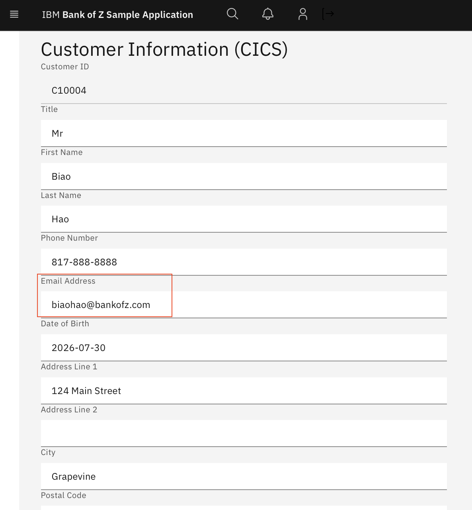

AI That Speaks Mainframe: Accelerating Z Modernization with IBM Bob Premium Package for Z
This demo is built on top of the Bank of Z application, forked in late July 2026 (commit 45454d4 as in the base branch). The enhancements are in branches with the prefix bobz-demo, such as bobz-demo/email-added, which includes code changes for adding an email to the customer record.
Goal: Show how IBM Bob Premium Package for Z (PPZ) accelerates understanding, analysis, and safe delivery of changes across a real multi-language mainframe application — and how it can be extended to fit any team's standards.
Agenda
Illustrative — select from the full list of demo scenarios, depending on focus and time available.
| Step | Topic | Time | Key message |
|---|---|---|---|
| 1 | Introduction — Bob, PPZ, Bank-of-Z, Build and Deploy on Z | 5 min | Bob starts from the same frontier model as Claude Code — PPZ is what makes it useful on Z. |
| 2 | Multi-language flow explanation | 10 min | Five files, five languages, one coherent answer — no copy-paste. |
| 3 | Customer audit trail analysis | 8 min | A compliance question answered in 60 seconds vs. a full day. |
| 4a | Add email — impact analysis | 8 min | 15 components. The hidden inline struct trap — caught before anyone wrote a line of code. |
| 4b | Add email — implementation plan | 5 min | Exact byte positions in COMMAREA. Not 'here's what to change' — 'here's exactly how'. |
| 4c | Add email — code changes | 5 min | Bob makes all the code changes across 30+ files — COBOL, BMS, z/OS Connect, Web UI. It also introduced and fixed 7 bugs, caught at compile, deploy, and runtime. |
| 4d | Add email — build, deploy & live UI | 5 min | This field didn't exist this morning. It's live on Z now. |
| 5 | ZCodeScan pre-commit review | 5 min | Your rules, enforced by AI, before the code ever reaches CICS. |
| 6 | Customizing Bob | 5 min | Every other AI tool is a black box. Bob's behavior is version-controlled YAML. |
| 7 | Summary & next steps | 3 min | Pick one change request. Run an impact analysis. Compare it to how long it takes today. |
| A1 | PL/I batch program analysis | 8 min | PL/I is not an afterthought — explain and change a 912-line batch program in one prompt. |
| A2 | Funds transfer failure path analysis | 8 min | Deadlock prevention, partial rollback, and abend codes — all traced from source. |
| A3 | IMS database analysis | 8 min | IMS DL/I, PSBs, DBDs — Bob reads assembly source and explains the access boundary. |
| A4 | CRECUST async credit check refactor | 8 min | 530 lines extracted into a clean service interface. Ready to swap for an API call. |
Step 1 Introduction: The Agent and the App
bobz-demo/1x-bob-and-ppz-overview.md for the full product overview, comparison table, and talking points.1a — What Is IBM Bob?
What you're looking at is IBM Bob — IBM's AI SDLC partner. It's available as Bob IDE (VS Code chat) and Bob Shell (terminal CLI). Bob combines intelligent multi-model orchestration with an agentic tool loop that reads files, queries codebases, runs commands, and reasons across multiple sources in a single turn. It is not a chatbot you paste snippets into.
Bob vs the competition — 30-second framing:
| GitHub Copilot | Claude Code | IBM Bob | |
|---|---|---|---|
| Model quality | Frontier (GPT, Claude, Gemini) | Frontier (Claude Sonnet / Opus) | Frontier — intelligent multi-model routing |
| Inline completion | ✅ Best-in-class | ❌ No tab completion | ✅ Yes |
| Multi-file agent | ✅ Yes | ✅ Yes | ✅ Yes |
| Customizable modes / skills | ✅ Yes | ✅ Yes | ✅ Team-authored Markdown, version-controlled |
| Z / mainframe awareness | ❌ None | ❌ None | ✅ Via PPZ extensions |
On general coding tasks, Bob is on par with Copilot and Claude Code — frontier models, agentic editing, customizable modes and skills. The question is what you build on top of that foundation — and that's where Bob Premium Package for Z comes in.
1b — What Is Bob Premium Package for Z (PPZ)?
Bob Premium Package for Z — or Bob PPZ — adds the Z-specific capability layer that turns Bob from a general-purpose AI SDLC partner into a mainframe-aware AI engineer. It ships as extensions to Bob IDE and Bob Shell across four pillars: Workflows, Application Analysis (Z Understand), Code Capabilities, and Integrations.

Source: IBM Docs — Bob PPZ 3.0 Solution Architecture
Components in the architecture diagram:
- Architect and Developer work in Bob IDE or Bob Shell; the local mainframe codebase is read directly
- IBM Bob (SaaS) hosts the agent with intelligent multi-model orchestration; LLM requests route to managed services (e.g. AWS Bedrock) via the IBM Bob cloud backend (on-prem deployment available Q3 2026)
- PPZ extensions — Z Understand (knowledge graph + agent tools, running on a Linux VM s390x or x86) and ZCodeScan (team-defined static analysis rules)
- z/OS (remote) — the mainframe target; Bob builds and deploys changes via DBB and Wazi Deploy
PPZ adds four pillars that no other AI tool has for Z:
| Pillar | What it adds |
|---|---|
| Workflows | Guided multi-step processes from the Bob chat interface: generate documentation, refactor COBOL/PL/I into modular services, generate or sync a data dictionary |
| Application Analysis (Z Understand) | Pre-indexed knowledge graph of the entire codebase — programs, copybooks, DB2 tables, call chains, paragraph-level control flow — queryable by the agent in real time |
| Code Capabilities | Z-aware generation, explanation, business-rule extraction, refactoring, and documentation across COBOL, JCL, PL/I, REXX, and Assembler |
| Integrations | Z Open Editor (MCP tools), ZCodeScan (team-defined YAML rule enforcement), and z/OS Debugger — usable directly from Bob IDE or Bob Shell |
Key differentiator:
- General AI tools (such as GitHub Copilot) can grep for
COPY CUSTOMER. Bob PPZ queries the Z Understand graph and returns every program that copies it, which need a DB2 DBRM rebind, which have a BMS dependency, and which are PL/I rather than COBOL — in one query. - This is your rules, your workflows, your institutional knowledge — encoded once and applied consistently by AI. When a senior developer retires, their expertise doesn't walk out the door. It lives in a YAML file and a Markdown skill.
1c — The App: Bank-of-Z
The application we'll be using for the demo, Bank-of-Z, is a multi-language banking application running on IBM Z — it has CICS transactions, IMS, DB2, PL/I batch, z/OS Connect REST APIs, and a web UI.
Logical Architecture:
Key messages:
- Everything is inside z/OS — Web UI, API Gateway, transactions, databases, batch — all z/OS
- One API, two transaction engines — CICS for relational (DB2), IMS for hierarchical (IMS DB); routing is transparent to the user
- Batch closes the loop — monthly statement generation reads DB2 and delivers output to the customer
Bank-of-Z at a glance:
| Layer | Technology |
|---|---|
| Web UI | HTML / JavaScript (Carbon Design) |
| API Gateway | z/OS Connect with JSONata mappings |
| CICS Presentation | COBOL + BMS 3270 maps |
| CICS Business Programs | COBOL (30+ programs, DB2 backend) |
| IMS Path | COBOL + PL/I + Java bridge (IMS DB backend) |
| Batch Reporting | PL/I + JCL |
| Data | DB2 (CUSTOMER, ACCOUNT, PROCTRAN) + IMS DB |
| Build & Deploy | IBM DBB, Wazi Deploy, ZCodeScan |
Key points in the architecture:
- The two runtime paths — CICS (customer IDs
C…) and IMS (customer IDsI…) — both exposed through the same z/OS Connect REST gateway; routing is client-side inapi.js - The presentation / business separation inside CICS: BNK1xxx programs handle 3270 screens and call business programs via
EXEC CICS LINK - The five async credit agency child tasks (
CRDTAGY1–5) spawned byCRECUSTusing CICS containers andRUN TRANSID— a sophisticated CICS Async API pattern - The audit trail — every CICS mutation (INSERT/UPDATE/DELETE on CUSTOMER or ACCOUNT) writes to
PROCTRAN - The batch path —
BNKSTMT.pli(PL/I) running under JES to generate monthly statements, reading from all three DB2 tables - The build pipeline — DBB impact build triggers recompile of all copybook dependents; Wazi Deploy promotes load modules; ZCodeScan enforces standards before commit
Every scenario you'll see today involves real code from this application — real cross-language tracing, real impact analysis, real code changes deployed on Z. Nothing is mocked or pre-computed.
1d — Build and Deploy on Z
Automatically provision a full application stack including DB2, CICS, IMS, z/OS Connect, and a Liberty frontend server, then build and deploy the application from the source.
- Application compilation, configuration, deployment procedures — using Bob to troubleshoot
- Installation workflow: verify prerequisites → configure target environment → install tools → build → deploy → verify

Deployment architecture — build pipeline:
CI/CD toolchains:
| Mode | Tools |
|---|---|
| Traditional CI/CD (SDLC) | ADFz (File Manager, Fault Analyzer, IDz+), TAz, WCA4Z v2, open source (Python, Node), Zowe |
| Agentic CI/CD (ADLC) | All SDLC tools + IBM Bob + Premium Package for Z + TAz Integration + Pipeline Automation |
Step 2 Multi-Language Program Explanation
bobz-demo/2-multi-language-program-explanation.md for the full pre-captured output.Prompt
What Bob produces
Bob reads five files simultaneously across five technology layers in a single pass:
src/frontend/js/api.js— JavaScript fetch callsrc/api/src/main/operations/%2Fcustomers/post/request.yaml— z/OS Connect JSONata mappingsrc/base/cics/cobol/BNK1CCS.cbl— CICS presentation programsrc/base/cics/cobol/CRECUST.cbl— Business program with async credit checkssrc/base/cics/cobol/CRDTAGY1.cbl— Credit agency stub
It produces:
- A layer-by-layer narrative from JS → z/OS Connect → COBOL → DB2
- An explanation of the CICS async child task pattern (
PUT CONTAINER/RUN TRANSID/FETCH ANY NOSUSPEND) - The exact timeout path: what
COMM-FAIL-CODE = 'G'means, which paragraphs are skipped, and what the web UI shows the user - A Mermaid flow diagram of the complete path
Why it matters
1. Cross-language, cross-layer reasoning in one pass
GitHub Copilot and similar tools work on open files. Bob was asked about a flow that spans JavaScript → YAML → two COBOL programs → PL/I awareness, and returned a single coherent narrative. No context-switching, no copy-paste.
2. Project-level institutional knowledge
Before reading a single source file, Bob consulted the project's knowledge base — a structured rulebook checked into source control alongside the code. That gave it facts invisible in any single file: the z/OS Connect always uses transid: OMEN; BNK1CCS has an inline COMMAREA with no COPY statement; routing is client-side based on customer ID prefix. An LLM with no project context would speculate on these points. Bob does not.
3. "What happens when it breaks?" is answered at every layer
The question specifically asked about the timeout path. Bob traced the exact divergence point (line 776 of CRECUST.cbl), named every paragraph skipped, and described the HTTP 400 the web UI receives — with exact COMM-FAIL-CODE values from the source. No mainframe developer who hasn't read CRECUST.cbl recently could answer this off the top of their head.
4. Grounded — never speculates
Bob is configured to never speculate about code it has not read directly. Every claim in the output is traceable to a specific line in a specific file. This is auditable.
Step 3 Customer Audit Trail Analysis
bobz-demo/3-customer-audit-trail-analysis.md for the full pre-captured output.Prompt
CUSTOMER DB2 table, and for each one tell me: which SQL operation it performs (SELECT, INSERT, UPDATE, DELETE), which paragraph contains that operation, and whether the program also writes to PROCTRAN as part of the same transaction. Then identify any program that reads from CUSTOMER but does not write an audit row to PROCTRAN — those are the gaps in the audit trail.What Bob produces
Bob invokes the Z Understand tools against the pre-indexed project, then correlates:
- 11 runtime usages of the CUSTOMER table across 6 programs (5 COBOL + 1 PL/I)
- For each usage: SQL operation, paragraph name, line number
- Cross-reference against PROCTRAN writes in the same program
- A gap analysis distinguishing genuine compliance gaps from expected read-only paths and test data loaders
Result: The audit trail has one genuine gap — UPDCUST — and three correctly unaudited paths:
UPDCUST— ⚠️ audit gap: mutates CUSTOMER (SELECT + UPDATE inUPDATE-CUSTOMER-DB2, line 222) with no PROCTRAN write. Every customer update is invisible to the audit trailINQCUST(read-only — correct by design)BNKSTMT.pli(batch reporting — correct by design)BANKDATA(test data loader — a legitimate production risk flag if ever run against prod)
Why it matters
1. A compliance question answered in seconds, not days
A traditional audit of "which programs touch the CUSTOMER table and do they all write audit records?" requires a mainframe developer to grep source, trace COPYbook dependencies, and cross-reference PROCTRAN usage — across 30+ programs. Bob answered it in one prompt, and surfaced a real gap (UPDCUST) that had gone unnoticed.
2. Multi-language awareness
The result includes BNKSTMT.pli — a PL/I batch program. Z Understand (and therefore Bob) indexes all supported languages in one project. A tool that only understands COBOL would miss it.
3. Risk nuance, not just a list
Bob didn't just say "these programs have no PROCTRAN write." It assessed why — identifying UPDCUST as a genuine compliance gap requiring remediation, distinguishing it from a compliant read-only inquiry (INQCUST) and a legitimate production risk in BANKDATA.
4. Demonstrate the "10× faster compliance audit" story
This scenario is the most direct translation of AI value into a business metric: a task that took a senior developer a day now takes 60 seconds. Regulators care about this.
Step 4 Add Email to Customer Info (End-to-End Change Delivery)
This step is in four sub-parts, from analysis to plan to implementation to deployment. Show as much as time allows.
4a — Impact Analysis
bobz-demo/4a-add-email-impact-analysis.md for the full pre-captured output.Prompt
What Bob produces
- 15 affected components across DB2, COBOL copybooks, COBOL programs, BMS maps, z/OS Connect provider files, JSONata mappings, OpenAPI schema, and Web UI
- A change propagation map showing the critical deployment sequence (DDL first, then COBOL compile, then DBRM bind, then z/OS Connect, then Web UI)
- Risk matrix — R1 (critical): COMMAREA length change and byte-position alignment;
BNK1DCS.cblflagged as having no COPY statement (inline manual struct — high risk of missing it) - Effort estimate and recommended next steps
Why it matters
1. Cross-stack blast radius in one query
Adding a field to a DB2 table in a mainframe app touches COBOL copybooks, inline structs, BMS maps, z/OS Connect .dai descriptor files, JSONata mappings, OpenAPI schemas, and HTML. Bob enumerated all 15 components without being told what the stack looks like.
2. The hidden trap was caught upfront
Bob flagged BNK1DCS.cbl as having an inline COMMAREA struct with no COPY statement — meaning it won't inherit the new field automatically. This is the kind of thing that causes a production outage 6 months after a change. An impact analysis that misses it costs real money.
3. Deployment order is a first-class output
The impact analysis doesn't just say "these files change." It says in what order to deploy them, and why the order matters (DDL before DBRM bind; COBOL before z/OS Connect provider files). This is the difference between a useful analysis and a list.
4b — Implementation Plan
bobz-demo/4b-add-email-implementation-plan.md for the full pre-captured output.Prompt
What Bob produces
A full implementation plan covering workstreams A–G:
| Workstream | Scope |
|---|---|
| A | DB2 DDL: ALTER TABLE |
| B | 5 COBOL copybooks (exact field insertions with PIC clauses) |
| C | 2 BMS screen maps (exact DFHMDF field definitions with row/column) |
| D | 6 COBOL programs (exact MOVE, host variable, SQL clause edits) |
| E | Build, bind, deploy sequence |
| F | z/OS Connect: 6 provider CPYs, .dai startPos values, 4 mapping YAMLs, OpenAPI |
| G | 3 Web UI files (HTML, JS) |
Plus exact byte-position appendices and a complete rollback plan.
Why it matters
1. Not a summary — exact edits
The plan includes the before/after COBOL code, the exact startPos values in the .dai descriptor files, and the exact JSONata expression for the null-guard ($exists($body.email) ? $body.email : ""). A developer can execute this plan without reading additional documentation.
2. The stuff most AI tools miss
The appendix specifies exact byte offsets in four COMMAREAs. Bob computed these from the existing copybook structures — not from a schema registry. This is the difference between "here's what to change" and "here's exactly how to change it safely."
3. Rollback is first-class
The plan includes a rollback matrix: what to do if DDL is deployed but programs aren't yet bound, if programs are bound but defects are found, if z/OS Connect is deployed and broken, and if the Web UI needs reversion. Rollback is an afterthought in most AI-generated plans.
4c — Code Changes
bobz-demo/4c-add-email-implementation-summary.md to walk through what was actually built.Prompt
What Bob produces
Bob makes all the code changes across 30+ files — every layer of the stack, unassisted:
- Adds
CUSTOMER_EMAIL CHAR(50)to the DB2 DECLARE TABLE inCUSTDB2.cpy - Adds
05 CUSTOMER-EMAIL PIC X(50)toCUSTOMER.cpyand03 COMM-EMAIL PIC X(50)to all four COMMAREA copybooks - Adds
DFHMDFfield definitions toBNK1CCM.bmsandBNK1DCM.bms - Updates host variables, SQL INSERT/SELECT/UPDATE clauses, and MOVE statements in all six affected COBOL programs
- Manually syncs the four inline structs (no COPY) in
BNK1DCS.cbl,BNK1CCS.cbl, andCRECUST.cbl - Updates all z/OS Connect
.daistartPos values,gen/CPY files, and JSON schemas across four provider sets - Adds JSONata null-guard mappings in all four request/response YAMLs
- Adds the
emailfield to three OpenAPI schemas and three Web UI files
Bob is not perfect. The implementation summary covers the full change record — including 7 bugs Bob introduced and then caught and fixed:
- 15 commits across 30+ files
- 7 self-introduced bugs, caught at compile, deploy, and runtime:
- Fix 2 (caught at compile):
END-EXEC.shifted to Area A inCUSTDB2.cpy— RC=8 compile failures in 4 programs. One indentation character. - Fix 6 (caught at runtime — critical):
WS-CHILD-DATAinCRECUST.cblis an inline struct with no COPY. WhenCUSTOMER.cpywas updated,WS-CHILD-DATAdidn't inherit the email field. Result: CICSGET CONTAINERreturnedLENGERR→COMM-FAIL-CODE = 'E'→ HTTP 400. Invisible until runtime testing. - Fix 7 (caught at runtime — critical): Email field byte position was placed at end-of-COMMAREA instead of after the phone field — a 50-byte misalignment that cascaded through all z/OS Connect
.daifiles. Only visible when live data came back garbled.
- Fix 2 (caught at compile):
Why it matters
1. AI that does the work, not just describes it
Bob didn't generate a checklist for a human to follow. It opened each file, computed the byte offsets, wrote the COBOL, and applied every change across COBOL, BMS, z/OS Connect, and the Web UI. The developer reviewed and approved — but didn't need to manually compute anything.
2. Honesty builds trust
Bob introduced 7 bugs (for a specific run with multiple minor changes of requirements) and fixed all of them — some at compile, some after deploy, some only visible at runtime. These are exactly the defects that escape into production in traditional change delivery: an END-EXEC. shifted to Area A; a silent CICS LENGERR from an unsynced inline struct; a 50-byte byte-position misalignment only visible when live data came back garbled. Bob is not flawless, but it finds and fixes its own mistakes. The implementation summary is a living record — a realistic picture of AI-assisted mainframe change delivery, not a sanitised success story.
3. Cross-stack consistency
The same AI that wrote the COBOL also updated the JSONata mapping, the OpenAPI schema, and the HTML form. No handoff, no translation error between layers.
4d — Build, Deploy, and Demo
Live demonstration
Pull the changes to the Z environment, run a complete DBB build, package the outputs, deploy via Wazi Deploy, and populate Db2 and IMS with test data.
.setup/setup-common.sh environment (if needed)
.setup/setup-common.sh install-bank-of-zDBB knows which programs include CUSTOMER.cpy and recompiles them all. Wazi Deploy promotes load modules to CICS.
Open the Bank-of-Z Web UI in a browser:
- Navigate to Create Customer — the email field is now present in the form
- Create a new customer with an email address, submit
- Navigate to Customer Details for that customer — email is displayed and editable

Why it matters
1. The "wow" moment — end-to-end in one session
From a blank workspace to a live feature running on Z. Impact analysis → plan → code changes → build → deploy → demo. A change that typically takes a sprint was delivered in conversations.
2. z/OS-native deployment — not a simulation
The build runs DBB on z/OS. The deploy runs Wazi Deploy to a live CICS region. The UI serves from Liberty on z/OS. This is not a local mock or a staging environment — it's the real stack.
This email field didn't exist in the codebase this morning. An AI agent reasoned about a 30-year-old COBOL application, produced a safe implementation plan with exact byte positions, made the changes, caught 7 bugs, and it's running on Z. What change request would you want to try this on?
Step 5 ZCodeScan: Custom Rule Enforcement Before Commit
bobz-demo/5-zCodeScan-rule-review-before-commit.md for the full pre-captured output.Prompt
What Bob produces
13 violations across XFRFUN.cbl, organized by rule ID and severity:
| Priority | Rule | Severity | Location |
|---|---|---|---|
| 🔴 | CheckSqlcodeAfterExecSqlRule | HIGH | WRITE-TO-PROCTRAN-DB2 — CICS ASKTIME/LINK calls silently ignore errors |
| 🟠 | CicsNoHandleRule | MEDIUM | PREMIERE/A010 line 272 — HANDLE ABEND hidden control jump |
| 🟠 | GotoRule | MEDIUM | 9 locations including cross-section GO TOs at lines 1282, 1479 |
| 🟠 | ProcedureRule | MEDIUM | 5 sections over 100 lines (largest: UPDATE-ACCOUNT-DB2 at ~600 lines) |
| 🟠 | NestedIfLimitRule | MEDIUM | UPDATE-ACCOUNT-DB2-TO — 8 levels deep |
| 🟡 | DisplayUponConsoleRule | MEDIUM | 20+ DISPLAY statements throughout |
| 🟡 | StopRunRule | MEDIUM | Unreachable GOBACK after EXEC CICS RETURN |
| 🟡 | EvaluateWhenOtherRule | MEDIUM | ABEND-HANDLING EVALUATE with no WHEN OTHER |
Each violation includes the exact fix — minimal, not a rewrite.
Why it matters
1. Your rules, enforced by AI
The rule set in zcodescan/zcodescan-rules.yaml is the team's own standards — not generic COBOL advice from the internet. Bob applied your rules to your code. This is the difference between a linter and a peer reviewer who knows the house style.
2. Pre-commit gate, not post-production incident
The HIGH violation — CICS commands with no RESP check — is the kind of defect that surfaces as an unexplained task abend in production at 2am. Catching it before commit means it never reaches CICS.
3. Prioritized, not a dump
The output is sorted by risk — HIGH first, then ordered by fix effort. A developer knows exactly where to start. Generic code review tools produce flat lists.
4. Transition into the customization story
Segue naturally: "The rules Bob just applied — those came from a YAML file your team controls. Let's talk about what else you can customize."
Step 6 Customizing Bob
This step combines live demo + talking points. Use the prompts below to show customization live — don't just describe it.
6a — Adding a new Mode
Every mode in Bob is a named entry in a single YAML file your team owns and version-controls. A mode defines the agent's role, its instructions, what files it can edit, and when to use it. Z Architect mode, for example, is configured to read the project knowledge base first, never speculate about code it hasn't opened, and always use Z Understand for cross-program queries. You can create a new mode for any workflow — a DB2 Performance Mode, a Security Audit Mode, an Incident Triage Mode. The same file is already in source control in this project.
Try this prompt:
Bob reads .bob/custom_modes.yaml, lists every mode, and summarizes its purpose. Shows the audience that modes are discoverable and self-documenting.
6b — Adding a Skill
A skill is a reusable instruction set Bob loads on demand — it's a SKILL.md file your team authors and stores under .bob/ in the repo. The ZCodeScan review you just saw — that's a skill. The impact analysis workflow — that's a skill. If your team has a standard process for change requests, incident triage, DB2 runbook generation, or DR documentation — encode it as a skill. Every developer gets that expertise, every time, consistently. Senior developer retires? Their checklist stays.
Open the project's commit guidelines file as an example of a Bob-readable instruction file already in the repository. For a full skill, the file has a SKILL.md name with a YAML frontmatter block declaring its name, description, and trigger conditions.
Try this prompt:
Bob lists and summarizes all skills, showing the audience they are first-class discoverable assets.
6c — ZCodeScan rule customization
The rule set Bob just applied against XFRFUN.cbl is a YAML file your team owns and version-controls. You define the rules: your naming conventions, your CICS patterns, your SQL standards. New joiners get the same review quality as your most experienced COBOL developer. And when auditors ask what standards your team enforces — you show them a YAML file in source control, not a verbal description.
Open zcodescan/zcodescan-rules.yaml and scroll to a rule definition.
Try this prompt:
Bob reads the rule file, groups rules by theme (CICS safety, SQL hygiene, code structure, naming), and explains the engineering rationale for each. Demonstrates that the rules are self-documenting and auditable.
Why it matters
1. It's not a black box
Many AI coding tools are a black box — you get what the vendor built. Bob is explicitly extensible. Your team's standards, your team's workflows, your team's guardrails.
2. Institutional knowledge is preserved and reused
When a senior developer encodes their review checklist as a ZCodeScan rule or a skill, that knowledge doesn't walk out the door when they retire. It's version-controlled, reviewable, and used by every team member.
3. Governance story
For regulated industries (banking, insurance, government): the ability to define, version-control, and audit the rules Bob applies is a compliance differentiator. "Our AI agent applies our standards" is a much stronger audit answer than "we used a generic AI assistant."
Step 7 Summary and Next Steps
Recap what we just demonstrated
| Scenario | What it showed | Business value |
|---|---|---|
| Multi-language flow explanation | Bob traced JS → z/OS Connect → COBOL → DB2 in one prompt | New developer onboarding in hours, not weeks |
| Audit trail analysis | Bob identified every program touching CUSTOMER and assessed PROCTRAN coverage | Compliance question answered in 60 seconds vs. a day |
| Impact analysis | Bob enumerated 15 components and flagged the inline-struct trap upfront | Changes delivered safely; no surprise production outages |
| Implementation plan | Bob produced exact edits with byte positions across a 7-workstream change | Reduced implementation effort by 50%+ |
| ZCodeScan review | Bob applied team-specific rules and prioritized fixes | Defects caught before commit, not at 2am |
| Customization | Modes, skills, rules — all team-controlled | AI that fits your standards, not the other way around |
Suggested next steps
- Connect Bob to your Z Understand project — get the cross-program analysis capabilities on your own codebase today
- Define your first ZCodeScan rule — start with one rule your team cares about (SQLCODE checks, RESP checks, GO TO)
- Pick a real change request — run an impact analysis on it and compare the result to how long it would have taken manually
- Pilot with one team — identify 2–3 developers who will use Bob daily and collect before/after time metrics
Appendix A — Additional Demo Scenarios
These scenarios are not part of the core flow but are ready to use for extended sessions, technical deep-dives, or when the audience asks "what else can it do?" Each appendix step is a fully worked example with the exact prompt and pre-captured output.
A1 PL/I Batch Program Analysis + Code Change
src/base/batch/pli/BNKSTMT.pli in the editor before running the prompt — this gives Bob direct access to the procedure bodies, local variable declarations, and exact print formatting logic. See bobz-demo/a1-bnkstmt-pli-analysis.md for the full pre-captured output.Prompt
What Bob produces
Part 1 — Business logic explanation:
- A full call-tree narrative of all 11 procedures (
MAIN→GET_STATEMENT_PERIOD→PROCESS_ALL_ACCOUNTS→GENERATE_STATEMENT→ … →PRINT_FOOTER) - Key business rules surfaced from the source: credit/debit classification by
HV_TRAN_TYPE, the back-calculated opening balance formula, the 55-line page-overflow mechanism, the February leap-year limitation, and null-indicator handling for optional fields - The two JCL input files (
DATECARD,SORTCODE) and their fallback behaviour
Part 2 — Targeted code changes (3 edits, 1 file):
| # | Location | Change |
|---|---|---|
| 1 | Working variables (after line 131) | DCL TRAN_CATEGORY CHAR(12) |
| 2 | PROCESS_TRANSACTIONS header (lines 658–667) | Add CATEGORY column to header and extend separator |
| 3 | PRINT_TRANSACTION print logic (lines 763–773) | SELECT block mapping HV_TRAN_TYPE to 12-char label; trim description from 30→18 chars to stay within 132-char line width |
Bob also flags the 132-char line width constraint proactively — adding the category without trimming description would silently truncate the print output on z/OS.
Why it matters
1. PL/I is not an afterthought
Most AI coding tools have weak or zero PL/I support. Bob read a 912-line PL/I batch program, understood the SQL cursor lifecycle, the PUT SKIP EDIT print formatting, the SELECT/WHEN construct, and the PL/I null-indicator pattern — and reasoned correctly about all of them.
2. Single-prompt: explain + change
The prompt asked for both an explanation and code changes in one shot. Bob held both tasks simultaneously — it used the explanation pass to understand the constraints (line width, type codes), then applied that understanding directly to the change specification.
3. The constraint catch
The 132-character REPORT_LINE limit was never mentioned in the prompt. Bob identified it from the DCL REPORT_LINE CHAR(132) declaration and pro-actively suggested trimming the description field from 30 to 18 characters to stay within the constraint.
4. "No other files change" is an output
Bob explicitly stated: "No DB2 schema change, no cursor change, no host variable additions, no copybook changes, no JCL changes." A confident, verifiable blast-radius statement.
A2 COBOL Funds Transfer Program: Logic + Failure Path Analysis
src/base/cics/cobol/XFRFUN.cbl in the editor before running the prompt — the file is 2,060 lines, and opening it lets Bob trace the exact COMM-FAIL-CODE values, locking-order branches, and abend handler. See bobz-demo/a2-xfrfun-funds-transfer-analysis.md for the full pre-captured output.Prompt
What Bob produces
Part 1 — Program overview: COMMAREA interface, full execution call tree, and the two PROCTRAN rows written per successful transfer.
Part 2 — The locking order strategy (deadlock prevention):
XFRFUN always locks the lower account number first, regardless of which is FROM and which is TO. This ensures two concurrent transfers between the same pair of accounts always acquire DB2 row locks in the same order — breaking the deadlock cycle. Bob also traces the DB2 deadlock retry loop (SQLCODE -911): up to 5 retries with a 1-second CICS DELAY, then ABEND 'RUF2'.
Part 3 — The partial-failure case:
| Scenario | COMM-FAIL-CODE | Rollback mechanism | PROCTRAN written? |
|---|---|---|---|
| TO account not found | '2' | Explicit SYNCPOINT ROLLBACK (×2) | ❌ No |
| TO account DB2 error | '3' | CICS ABEND 'TO ' → UOW rollback | ❌ No |
| FROM account not found | '1' | SYNCPOINT ROLLBACK | ❌ No |
| PROCTRAN write fails | — | CICS ABEND 'WPCD'/'WPCT' → UOW rollback | ❌ Both rows rolled back |
| Both accounts updated | — | None needed | ✅ Two rows written |
Why it matters
1. "How does it handle X?" is answered from the actual code
Bob traced all four code paths from source, named the exact COMM-FAIL-CODE value for each, and identified which used explicit SYNCPOINT ROLLBACK vs CICS task abend. No guessing.
2. The locking order insight
The deadlock prevention strategy at lines 378–904 is architectural knowledge that lives only in the code. Bob identified it as such and explained why it works. A developer new to this program would take hours to reach the same understanding.
3. Design gaps surfaced proactively
Bob flagged the "no overdraft checking" constraint — not as a bug, but as an intentional design decision that the calling layer must account for. A risk a new developer would miss; Bob catches it from a one-line comment in the program header.
4. The PROCTRAN write failure scenario
The prompt only asked about the account update partial failure. Bob went further and described what happens if the PROCTRAN INSERT fails after both accounts are already updated — abend codes 'WPCD' (FROM row) and 'WPCT' (TO row), both causing CICS to roll back the UOW including the account updates. The freeform abend string explicitly notes: "Data inconsistency, data UPDATED on ACCOUNT file" — a signal to operations that the abend description itself is a diagnostic artefact.
A3 IMS Database Analysis: IBGCUDAT Segments and CUSTOMER/CUSTACCS Relationship
src/base/ims/ in the explorer. Bob will read both the PSB and DBD assembly sources automatically. See bobz-demo/a3-ims-ibgcudat-analysis.md for the full pre-captured output.Prompt
What Bob produces
Bob reads IBGCUDAT.asm (PSB), IBGCUDAT.cbl (program), CUSTOMER.asm (DBD), and CUSTACCS.asm (DBD) — then synthesises across all four sources.
Surprise answer — CUSTOMER and CUSTACCS have no IMS parent-child relationship — both are independent flat HDAM databases with PARENT=0. CUSTACCS is a cross-reference table (the IMS equivalent of a join table). A less rigorous tool would have speculated from the naming.
PSB cross-reference matrix:
| PSB | CUSTOMER | CUSTACCS | ACCOUNT | HISTORY | TSTAT | Ref tables |
|---|---|---|---|---|---|---|
IBGCUDAT | G | — | — | — | — | — |
IBSCUDAT | R | — | — | — | — | — |
IBLOGIN/OUT | R | — | — | — | — | — |
IBACSUM | — | G | G | — | — | — |
IBTRAN | — | G | R | I | — | — |
IBLOAD | L | L | L | L | L | L (all) |
Notable: HISTORY is insert-only from COBOL (IBTRAN PROCOPT=I) — reads come exclusively from the Java JMP layer.
Why it matters
1. IMS is not a second-class citizen
Bob read PSB assembly source and DBD assembly source, understood SEQ=M vs SEQ=U, and correctly identified that PARENT=0 on both databases means no IMS hierarchy. This level of IMS fluency is rare even among experienced mainframe developers.
2. The correct answer is counter-intuitive
The prompt specifically asked about parent-child relationship. Bob gave the correct, counter-intuitive answer: there isn't one. A less rigorous tool would have speculated that CUSTACCS is a child segment of CUSTOMER based on naming. Bob went to the source — PARENT=0 in CUSTACCS.asm — and explained why the design chose cross-reference databases over hierarchical segments.
3. The PSB is the security and access boundaryPROCOPT=G means IBGCUDAT cannot insert, update, or delete. The PSB is the IMS equivalent of a DB2 GRANT statement. No other AI tool reads PSB assembly source and interprets its security implications.
4. The ecosystem view — from one question
The prompt was about one program and two databases. Bob delivered a 9-database × 8-PSB access matrix, identified that HISTORY is write-only from COBOL, noted that three reference databases (TTYPE, CUSTTYPE, TSTATTYP) are never accessed at runtime, and confirmed that IBGCUDAT is the most narrowly scoped PSB in the entire IMS subsystem. None of this was asked — all of it is useful.
A4 CICS COBOL Refactor: CRECUST Async Credit Check
src/base/cics/cobol/CRECUST.cbl in the editor before running the prompt. See bobz-demo/a4-crecust-async-refactor.md for the full pre-captured output.Prompt
What Bob produces
Bob reads the full CRECUST.cbl (1,631 lines) and CRECUST.cpy, identifies the CREDIT-CHECK section as the extraction target (~530 lines, 604–1135), and produces three deliverables:
- New copybook
CRCCVERI.cpy— a minimal COMMAREA contract (input: customer fields; output: credit score, review date, success, fail-code) - New program
CRCCVERI.cbl— the extracted credit check program with all async dispatch logic;GOBACKused correctly (notEXEC CICS RETURN) - Modified
CRECUST.cbl— ~530 lines → 30 lines inCREDIT-CHECK; 18 Working-Storage fields moved to CRCCVERI
CRECUST ──LINK──▶ CRCCVERI ──RUN/FETCH──▶ CRDTAGY1-5
COMMAREA (async, delay, aggregate)
◀──RETURN──
CREDIT-SCORE / CS-REVIEW-DATE / SUCCESS / FAIL-CODEWhy it matters
1. Separation of concerns — a real architectural improvement
The async dispatch complexity (channels, containers, child tokens, NOSUSPEND fetch loop, score aggregation) is entirely removed from CRECUST. CRECUST now expresses business intent: "perform credit check, get score, continue." That is a meaningful improvement in readability and maintainability, not just a cosmetic reorganisation.
2. Future-proof by design
The prompt explicitly asked for "easy to switch to an API call." Bob designed the interface so that changing the credit check mechanism requires zero changes to CRECUST — only CRCCVERI.cbl is replaced. The COMMAREA contract (CRCCVERI.cpy) is the stable interface boundary. This is a design decision, not just a code move.
3. Precise field-scope analysis
Bob identified the one field (WS-CREDIT-CHECK-ERROR) that crosses the boundary — set inside CREDIT-CHECK, tested in P010 — and kept it in CRECUST. The other 18 Working-Storage fields were confirmed as exclusively used inside CREDIT-CHECK and moved. This required reading the full program, not just the section being extracted.
4. "Changes only" is a first-class capability
The prompt said "show me the changes to be made only." Bob produced the new files and exact edits without regenerating the unchanged sections of CRECUST.cbl. Precise, reviewable, safe to apply.
5. GOBACK vs EXEC CICS RETURN — getting the CICS detail right
In the extracted CRCCVERI.cbl, Bob used GOBACK rather than EXEC CICS RETURN. A LINKed program returns control to its caller via GOBACK; EXEC CICS RETURN would return to CICS and end the task. This is a subtle but critical CICS correctness point that generic AI tools frequently get wrong.
Acknowledgements
This demo was created by the IBM US FSM Z Acceleration team, under Eric Watson's leadership. Special thanks to Kathryn McAvoy for her leadership, Tolga Oral for his advice, and Sailesh Jalakam, Colin Henderson, Adarius Isaac, Frank Hernandez, John Gustavson, and Joe Pesot — without their effort, this would not have been possible.